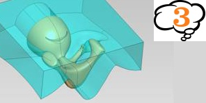

|
 ThinkDesign
9.0 ThinkDesign
9.0
ThinkDesign
size güçlü, bütünleþik bir tasarým fýrsatý sunmaktadýr. Piyasadaki
diðer ürünlerin tersine Think3 baþtan beri basit kullanýcýyý
karmaþadan uzak tutacak þekilde kullanýmlý kolay tasarlanmýþtýr.Tasarýmcýlar
ve mühendisler ihtiyaç duyduklarý her yapýya kolay basit ve
açýkça ulaþabilmektedir. Think3 size 3B makine ve kalýp tasarýmý,
veri yönetimi ve 2B entegrasyonda en iyisini sunuyor. Endüstriyel
tasarým ve makine tasarýmýnda tüm, ihtiyaçlarýnýza cevap bulabilirsiniz.
ThinkDesign, öðrenim ve kullaným kolaylýðý ile, tasarýmcýlara
ürünleri daha hýzlý ve basitçe oluþturabilmeleri imkanýný
vermektedir. ThinkDesign, Think3 ürün yelpazesinin 3 boyutlu
tasarým modülüdür.
Yelpazenin
diðer ürünleri; Thinkshape (geliþmiþ yüzey modelleme), ThinkReal
(foto-realisttik görüntü), ThinkParasolid (Parasolid veri
transferi), ve ThinkCATIA (CATIA veri transferi) modülleridir.
ThinkDesign ayrýca ThinkTeam (PDM çözümü) ile çift taraflý
olarak çalýþmaktadýr. ThinkTeam ile birlikte ThinkDesign,
endüstriyel tasarým ve endüstriyel makine tasarým firmalarýna,
ürün tasarýmý ve ürün veri yönetiminde büyük kolaylýklar saðlamaktadýr.
ThinkDesign özellikleri:
Geometri
Çekirdeði
Her
3B tasarým yazýlýmýnýn temeli kullandýðý geometri çekirdeðidir.
Bir arabanýn motoru gibi, çekirdek yazýlýmýn çalýþmasýnda
temel görevi üstlenir. Birçok yazýlýmýn tersine, Think3 kendi
geometri çekirdeðine sahiptir. ThinkDesign'ýn tescilli çekirdek
mimarisi, hýzlý ve temeli saðlam yapý geliþtirmelerinde, önemli
avantajlar saðlamaktadýr. Geometri çekirdeðinin saðladýðý
bir kýsým avantajlar aþaðýdaki gibi sýralanabilir.
- Katý/yüzey
iç içe çalýþma
- Non-Manifold
Topoloji (Açýk Katý)
-
2B/3B çevrimi
- Yüzey,
katý, tel kafes, montaj, sac açýlým ve 2B çizim için tek
bir ortam.
- Yüksek
hassasiyet: analitik ve NURBS yüzeyler
ThinkDesign iþlem çekirdeði
- Kullanýcý
dostu arabirim
- Tüm
modelleme teknikleri bir ortamda (katý, yüzey, montaj, sac
açýným)
- 3B
parametrik katý modelleme
- Geliþmiþ
eðri ve yüzey tasarýmý
- Bütünleþik
yüzey modelleme
- Katý/yüzey
iç içe çalýþma imkaný
- Hibrid
modelleme
- Global
nesne modelleme
- Bütünleþik
montaj
- Büyük
montaj dosyalarýnýn yönetimi
- Bütünleþik
sac açýným
- Otomatik
teknik resim alma
- 2B
tüm teknik resim özellikleri
- 2B
çizim, planlama ve detaylandýrma
- Standart
parça kütüphaneleri
- Mühendislik
ve iþ-çevrim araçlarý
- Entegre
mühendislik veri yönetimi
- Akýllý
nesne yapýlandýrmasý
- Kalýp
tasarýmý
- 2
ve 3 boyutlu dosya transferleri
- DXF,
DWG, IGES, STEP, VDA,STL,INV,vb...
- CATIA
ve Parasolid transferi
Katý/Yüzey
Ýç Ýçe Çalýþma
Katý
ve yüzey arasýndaki kuvvetli baðlantýlar, üst seviye esnekliði
saðlamaktadýr. Tasarýmcýlar katý veya yüzeyleri, gerekli komutlarý
kullanarak deðiþtirebilmektedirler. Diðer bir deyiþle katý
nesneler istenildiðinde yüzeylere çevrilebilirken, yüzeyler
de istenildiðinde katý nesnelere çevrilebilmektedir. Böylece
kullanýcý her iki nesne tabanýna ait komutlarý kullanabilmektedir.
Açýk katý desteði sayesinde, sýfýr kalýnlýklý katýlarla veya
tamamlanmamýþ modellerle çalýþmak mümükün olmaktadýr.
Think3
kullanýcýlara katý modellemenin sýnýrlamalarýndan baðýmsýz,
herhangi bir tasarým iþlemini gerçekleþtirmelerinde tam bir
hibrid modelleme imkaný sunmaktadýr.
Akýllý
Nesneler
Kullanýcý
tanýmlý makro yazýmlarýndan daha geliþmiþ olarak, tekrarlý
kullanýmlar için Thinkdesign içerisinde, bünyesinde topoloji,
geometri verileri ile birlikte dökümantasyonu da içeren akýllý
nesne mantýðý kullanýlmaktadýr. Akýllý nesneler her hangi
bir yapýyý (katý, yüzey, teknik resim, montaj,montaj gruplamasý,
sac açýným) barýndýrabilir. Akýllý nesnelerle baðdaþýk dokümanlar,
metin, e-posta veya hergi bir multimedia dosyasý olabilir.
Akýllý nesnelerin en büyük özelliklerinden biri ThinkDesign
içine sürüklenip býrakýldýklarýnda, kendilerini atanan profillere,
katýlara veya yüzeylere adapte edebilmeleridir. Bu sayede
kullanýcý sýralý iþlemlerin tanýmlamalarýnýn yapýlmasýný programa
býrakarak zamandan tasarruf etmiþ olur.
Kullanýcý
Arabirimi
Think3,
kullanýcý dostu, verimli ve üretken arabirimi ile varolan
kullanýcý arabirimlerinden çok daha fazlasýný sunmaktadýr.
Minyatür
Diyalog Pencereleri; geometriyi saklayan ve kullaným alanýnýzý
daraltan diyalog pencereleri yerine ThinkDesign içinde istenildiðinde
saklanabilen, þeffaf hale getirilebilen, ekranýn içine gömülmüþ
(ayrý pencere açýlmamaktadýr.), ve kullanýcýya komutlarýn
çalýþtýrýlmasý esnasýnda yardým eden diyalog pencereleridir.
Bu sayede kullanýcý komutlarý daha verimli ve hýzlý kullanmaktadýr.
ThinkDesign
9.0 hakkýnda daha fazla bilgi için: www.think3.com
Ýrtibat:
Numerik
Kontrol Grup Ltd. Þti.
Gülbahar
Mah. Balaban Sok. Meriç Konak 10 Apt. No:5 Dükkan 3-5
Gayrettepe / Ýstanbul
Tel : (212) 274 89 42
Faks: (212) 275 60 15
Web: www.nkg.com.tr
E-Posta:
bilgi@nkg.com.tr
|